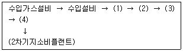
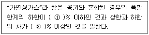
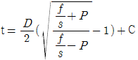

가스산업기사 (2005-03-06 기출문제)
1과목: 연소공학
1. 화염의 온도를 높이려 할 때 해당되지 않는 조작은?
- 공기를 예열하여 사용한다.
- 연료를 완전연소 시키도록 한다.
- 발열량이 높은 연료를 사용한다.
- 과잉공기를 사용한다.
(정답률: 76%)

2. 불완전 연소의 원인으로 볼 수 없는 것은?
- 불꽃의 온도가 높을 때
- 필요량의 공기가 부족 할 때
- 배기가스의 배출이 불량 할 때
- 공기와의 접촉 혼합이 불충분 할 때
(정답률: 85%)
3. 다음 중 중합에 의한 폭발을 일으키는 물질은?
- 과산화수소
- 시안화수소
- 아세틸렌
- 염소산칼륨
(정답률: 85%)
4. 2atm, 10L의 기체 A 와 4atm, 10L의 기체 B를 전체부피 40L의 용기에 넣을 경우 용기 내 압력은 얼마인가? (단, 온도는 항상 일정하고, 기체는 이상기체라고 한다.)
- 0.5 atm
- 1.0 atm
- 1.5 atm
- 2.0 atm
(정답률: 59%)
5. 다음은 연소를 위한 최소 산소량(Minimum oxygen for combustion,MOC)에 관한 사항이다. 옳은 것은?
- 가연성 가스의 종류가 같으면 함께 존재하는 불연성 가스의 종류에 따라 MOC 값이 다르다.
- MOC를 추산하는 방법 중에는 가연성 물질의 연소상한계값(H)에 가연물 1몰이 완전 연소할 때 필요한 과잉 산소의 양론 계수값을 곱하여 얻는 방법도 있다.
- 계 내에 산소가 MOC 이상으로 존재하도록 하기 위한 방법으로 불활성 기체를 주입하여 계의 압력을 상승시키는 방법이 있다.
- 가연성 물질의 종류가 같으면 MOC 값도 다르다.
(정답률: 54%)
6. 95℃의 온수를 100kg/h 발생시키는 온수 보일러가 있다. 이 보일러에서 저발열량이 45MJ/m3N 인 LNG를 1m3/h 소비할 때 열효율은 얼마인가? (단. 급수의 온도는 25℃이고 물의 비열은 4.184kJ/(kg·K)이다.)
- 60.07%
- 65.08%
- 70.09%
- 75.10%
(정답률: 69%)
7. 어느 과열증기의 온도가 350℃일 때 과열도는? (단, 이 증기의 포화온도는 573K이다.)
- 23K
- 30K
- 40K
- 50K
(정답률: 62%)
8. 다음 메탄가스의 설명에 관한 내용 중 옳은 것은?
- 고온에서 수증기와 작용하면 반응하여 일산화탄소와 수소를 생성한다.
- 공기 중 메탄가스가 60% 정도 함유되어 있는 기체가 점화되면 폭발한다.
- 수분을 함유한 메탄은 금속을 급격히 부식시킨다.
- 메탄은 조연성 가스이기 때문에 다른 유기화합물을 연소시킬 때 사용한다.
(정답률: 81%)
9. 다음 중 가스 연료의 장점을 잘못 기술한 것은?
- 연소 효율이 높다.
- 연소의 조정이 어렵다.
- 연료 자체의 예열이 용이하다.
- 적은 과잉 공기로서 완전 연소가 가능하다.
(정답률: 65%)
10. 폭굉이 발생하는 경우 파면의 압력은 정상연소에서 발생하는 것보다 일반적으로 얼마나 큰가?
- 2배
- 5배
- 8배
- 10배
(정답률: 76%)
11. 연소속도에 영향을 주는 요인이 아닌 것은?
- 화염온도
- 산화제의 종류
- 지연성물질의 온도
- 미연소가스의 열전도율
(정답률: 69%)
12. 프로판가스의 연소과정에서 발생한 열량이 15500kcal/kg 이고, 연소할 때 발생된 수증기의 잠열이 4500kcal/kg이다. 이 때 프로판 가스의 연소효율은 얼마인가?(단,프로판가스의 진발열량은 12100kcal/kg임)
- 0.54
- 0.63
- 0.72
- 0.91
(정답률: 57%)
13. 다음은 층류연소속도에 대한 설명이다. 옳은 것은?
- 비열이 클수록 층류연소속도는 크게 된다.
- 비중이 클수록 층류연소속도는 크게 된다.
- 분자량이 클수록 층류연소속도는 크게 된다.
- 열전도율이 클수록 층류연소속도는 크게 된다.
(정답률: 56%)
14. 다음 위험성을 나타내는 성질에 관한 설명으로 옳지 않은 항은?
- 비등점이 낮으면 인화의 위험성이 높아진다.
- 유지, 파라핀, 나프탈렌 등 가연성 고체는 화재시 가연성 액체로 되어 화재를 확대한다.
- 물과 혼합되기 쉬운 가연성 액체는 물과의 혼합에 의해 증기압이 높아져 인화점이 낮아진다.
- 전기전도도가 낮은 인화성 액체는 유동이나 여과시 정전기를 발생하기 쉽다.
(정답률: 69%)
15. 다음중 발화지연시간(Ignition delay time)에 영향을 주는 요인이 아닌 것은?
- 온도
- 압력
- 폭발하한 값의 크기
- 가연성 가스의 농도
(정답률: 70%)
16. 산소 64kg과 질소 14kg의 혼합가스가 나타내는 전압이 20기압이다. 이 때 산소의 분압은?(단, O2 분자량=32, N2 분자량=28)
- 10 atm
- 13 atm
- 16 atm
- 19 atm
(정답률: 70%)
17. 다음 중 폭발한계 범위가 가장 넓은 것은?
- 프로판
- 메탄
- 암모니아
- 이황화탄소
(정답률: 52%)
18. 다음 폭발형태 중 물질의 물리적 형태에 의하여 폭발하는 것이 아닌 것은?
- 가스폭발
- 분해폭발
- 액적폭발
- 분진폭발
(정답률: 60%)
19. 다음 중 매연발생으로 일어나는 피해 중 해당되지 않는 것은?
- 열손실
- 환경오염
- 연소기 과열
- 연소기 수명단축
(정답률: 59%)
20. 다음 중 착화온도가 낮아지는 이유가 되지 않는 것은?
- 압력을 높인다.
- 발열량이 많다.
- 산소농도를 높인다.
- 탄화수소는 분자량이 작은 경우이다.
(정답률: 65%)
2과목: 가스설비
21. 다음 중 동관(銅管)의 장점에 대한 설명이 아닌 것은?
- 열전도율이 적다.
- 시공이 용이하다.
- 내표면에서 마찰손실이 적다.
- 내식성 및 열변형에 강하다.
(정답률: 68%)
22. 메탄가스에 대한 설명으로 옳은 것은?
- 공기중에 30% 의 메탄가스가 혼합된 경우 점화하면 폭발한다.
- 담청색의 기체로서 무색의 화염을 낸다.
- 고온도에서 수증기와 작용하면 일산화탄소와 수소를 생성한다.
- 올레핀계탄화수소로서 가장 간단한 형의 화합물이다.
(정답률: 80%)
23. 자동절체식 조정기가 수동식 조정기에 비해 좋은 점이 아닌 것은?
- 전체 용기 수량이 많아져서 장시간 사용할 수 있다.
- 분리형을 사용하면 1단 감압식 조정기의 경우보다 배관의 압력손실을 크게해도 된다.
- 잔액이 거의 없어질 때까지 사용이 가능하다.
- 용기 교환주기의 폭을 넓힐 수 있다.
(정답률: 60%)
24. 상용압력이 0.1MPa 이하인 아세틸렌 역화방지 장치의 방출장치 작동압력으로 옳은 것은?
- 1MPa 이상
- 2MPa 이상
- 0.3MPa 이상 0.4MPa 이하
- 0.4MPa 이상 0.5MPa 이하
(정답률: 55%)
25. 다단압축기에서 실린더 냉각의 목적으로 옳지 않은 것은?
- 밸브 및 밸브스프링에서 열을 제거하여 오손을 줄이기 위하여
- 흡입시 가스에 주어진 열을 가급적 높이기 위하여
- 흡입효율을 좋게 하기 위하여
- 피스톤링에 탄소화물이 발생하는 것을 막기 위하여
(정답률: 79%)
26. 다음 중 황화를 방지하는 원소가 아닌 것은?
- Cr
- Fe
- Al
- Si
(정답률: 59%)
27. 다음 중 압축시 이론적으로 온도상승이 높게 발생하는 순서대로 나열된 것은?
- 등온압축 ＞ 단열압축 ＞ 폴리트로픽압축
- 단열압축 ＞ 폴리트로픽압축 ＞ 등온압축
- 폴리트로픽압축 ＞ 등온압축 ＞ 단열압축
- 온도는 모두 동일하다.
(정답률: 56%)
28. 액화가스용품 중 자동절체식분리형조정기의 입구압력 범위는 어느 것인가?
- 조정압력이상‾1.56MPa
- 0.07‾1.56MPa
- 0.1‾1.56MPa
- 0.01‾0.1MPa
(정답률: 55%)
29. -3℃ 에서 열을 흡수하여 27℃ 에 방열하는 냉동기의 최대성능계수는?
- 3
- 6
- 9
- 12
(정답률: 62%)
30. 액화 사이클 중 비점이 점차 낮은 냉매를 사용하여 저비점의 기체를 액화하는 사이클은?
- 린데 공기 액화 사이클
- 가역가스 액화 사이클
- 카스케이드 액화 사이클
- 필립스의 공기 액화 사이클
(정답률: 63%)
31. 정압기의 특성 중 부하변동이 큰 곳에 사용되는 정압기에 대하여 응답의 신속성과 안정성을 나타내는 특성은?
- 정특성
- 동특성
- 유량 특성
- 유압 특성
(정답률: 59%)
32. 다음 금속재료 중 저온재료로서 적당하지 않은 것은?
- 모넬메탈
- 9% 니켈강
- 18-8 스테인레스강
- 탄소강
(정답률: 69%)
33. 원심펌프의 유량 1[m3/min], 전양정 50[m], 효율이 80%일때 회전수를 10% 증가시키면 동력은 몇 배가 필요한가?
- 1.22
- 1.33
- 1.51
- 1.73
(정답률: 64%)
34. 배관용 탄소강관의 인장강도는 30㎏/㎝2 이상이며 200A의 강관(외경D = 216.3mm, 구경두께 5.8mm)이 내압 9.9㎏/㎝2을 받았을 경우에 관에 생기는 원주방향 응력은?
- 88 ㎏/㎝2
- 175 ㎏/㎝2
- 263 ㎏/㎝2
- 351 ㎏/㎝2
(정답률: 70%)
35. LP가스 수입기지 플랜트를 기능적으로 구별한 설비시스템에서 고압저장 설비에 해당하는 것은?

- (1)
- (2)
- (3)
- (4)
(정답률: 75%)
36. 고압가스에 관한 용어의 정의 중 ( )에 적합한 수치는?

- ① 5, ② 10
- ① 5, ② 20
- ① 10, ② 20
- ① 10, ② 30
(정답률: 80%)
37. 고압 원통형 저장탱크의 지지방법 중 횡형 탱크의 지지 방법으로 널리 이용되는 것은?
- 새들형(Saddle형)
- 지주형(Leg형)
- 스커트형(Skirt형)
- 평판형(Flat Plate형)
(정답률: 78%)
38. 전기방식 중 직류전원장치, 레일, 변전소등을 이용하여 지하에 매설된 가스배관을 방식하는 방법은?
- 희생양극법
- 외부전원법
- 선택배류법
- 강제배류법
(정답률: 57%)
39. 바깥지름과 안지름의 비가 1.2 이상인 산소가스 배관의 두께를 구하는 식은 다음과 같다. 여기에서 C 는 무엇을 뜻하는가? (단, t는 관두께, D는 안지름, S는 안전율, P는 상용압력, f는 재료의 인장강도 규격최소치)

- 부식여유수치
- 인장강도
- 이음매의 효율
- 안전여유수치
(정답률: 62%)
40. 저압 가스 배관에서 관의 내경이 1/2 배로 되면 압력손실은 몇 배로 되는가? (단, 다른 모든 조건은 동일한 것으로 본다.)
- 4
- 16
- 32
- 64
(정답률: 83%)
3과목: 가스안전관리
41. 공기중에 누출될 때 바닥으로 흘러 고이는 가스로만 이루어진 것은?
- 프로판, 수소, 아세틸렌
- 에틸렌, 천연가스, 염소
- 염소, 암모니아, 포스겐
- 부탄, 염소, 포스겐
(정답률: 72%)
42. 도로밑 도시가스배관 직상단에는 배관의 위치, 흐름방향을 표시한 라인마크(Line Mark)를 설치(표시)하여야 한다. 직선 배관인 경우 라인마크의 설치간격은?
- 25m
- 50m
- 100m
- 150m
(정답률: 89%)
43. 가스공급 시설이라고 볼 수 없는 것은?
- 배관
- 정압기
- 가스계량기
- 본관 밸브
(정답률: 60%)
44. 공기중에 노출되었을 경우 폭발의 위험도 있고 독성을 가지고 있는 가스가 아닌 것은?
- 브롬화메탄
- 산화에틸렌
- 일산화탄소
- 포스겐
(정답률: 43%)
45. 도시가스용 납사의 가스화 원료로서의 특성에 대한 설명으로 옳은 것은?
- 파라핀계 탄화수소가 많다.
- 카본의 석출이 많다.
- 저장, 취급이 비교적 복잡하다.
- 증열용 원료로서 그대로 기화혼입이 불가능하다.
(정답률: 70%)
46. 고압가스제조시설로서 정밀안전검진을 받아야 하는 노후시설은 최초의 완성검사를 받은 날부터 얼마를 경과한 시설을 말하는가?
- 7년
- 10년
- 15년
- 20년
(정답률: 57%)
47. 내용적 40L의 CO2용기에 법적최고량의 CO2가스를 충전하였다. 이 용기에 충전된 CO2가스의 중량(kg)은? (단, CO2의 가스정수는 1.47이다.)
- 29.9kg
- 27.2kg
- 58.8kg
- 64.68kg
(정답률: 57%)
48. 다음 중 액화석유가스 충전사업소내에 설치할 수 없는 건축물 또는 시설은?
- 충전소의 관계자가 근무하는 대기실
- 충전소의 업무를 행하기 위한 사무실 및 회의실
- 충전을 하기 위한 작업장
- 영업장 면적이 200m2인 기사식당
(정답률: 84%)
49. 분출압력 20 kg/cm2·g 에서 작동되는 스프링식 안전밸브가 있다, 밸브 지름이 5cm 이면 스프링의 힘은 얼마인가?
- 392.5㎏
- 395.3㎏
- 398.4㎏
- 401.3㎏
(정답률: 35%)
50. 다음 중 특정설비별 기호로 적합하지 아니한 것은?
- 아세틸렌가스용 : AG
- 압축가스용 : PG
- 액화석유가스용 : LPG
- 저온 및 초저온가스용 : TG
(정답률: 75%)
51. 다음의 액화가스를 이음매 없는 용기에 충전할 경우 그 용기에 대하여 음향검사를 실시하고 음향이 불량한 용기는 내부조명검사를 하지 않아도 되는 것은?
- 액화프로판
- 액화암모니아
- 액화탄산가스
- 액화염소
(정답률: 64%)
52. 고압가스제조허가의 종류가 아닌 것은?
- 고압가스특정제조
- 고압가스일반제조
- 고압가스충전
- 특정고압가스제조
(정답률: 66%)
53. 내용적 50ℓ인 용기에 40kg/cm2 의 수압을 걸었더니 내용적이 50.8ℓ가 되었고 압력을 제거하여 대기압으로 하였을 때 내용적이 50.02ℓ이 되었다면 이 용기의 항구증가율은 얼마이며, 이 용기는 사용이 가능한가?
- 1.6 %, 가능
- 1.6 %, 불능
- 2.5 %, 가능
- 2.5 %, 불능
(정답률: 74%)
54. 다음 중 독성가스가 아닌 것은?
- 포스겐
- 세렌화수소
- 시안화수소
- 부타디엔
(정답률: 68%)
55. 고압가스를 취급하는 제조설비를 수리할 때 공기로 직접 치환하여도 보안상 지장을 주지 않는 가스는?
- 수소
- 염소
- 천연가스
- 아세틸렌
(정답률: 38%)
56. 용기제조자의 수리범위에 속하지 않는 것은?
- 용기몸체의 용접
- 냉동기의 단열재 교체
- 아세틸렌 용기내의 다공물질 교체
- 용기부속품의 부품교체
(정답률: 45%)
57. 고압가스 특정제조시설에서 고압가스 배관을 시가지외의 도로 노면 밑에 매설하고자 할 때 노면으로부터 배관외면까지의 매설깊이는?
- 1.5m 이상
- 1.2m 이상
- 1.0m 이상
- 2.0m 이상
(정답률: 68%)
58. 독성가스를 냉매로 사용하는 냉동설비중 방류둑을 설치하여야 하는 것으로서 옳은 것은?
- 수액기의 내용적이 1,000ℓ이상
- 수액기의 내용적이 10,000ℓ이상
- 수액기의 내용적이 20,000ℓ이상
- 수액기의 내용적이 100,000ℓ이상
(정답률: 58%)
59. 공기 중에서 수소의 폭발한계는?
- 15 ‾ 90%
- 38 ‾ 90%
- 4.2 ‾ 50%
- 4.0 ‾ 75%
(정답률: 83%)
60. -162℃ 의 LNG (액비중:0.46, CH4:90%, 에탄:10%)를 20℃까지 기화시켰을 때의 부피는?
- 625.6 m3
- 635.6 m3
- 645.6 m3
- 655.6 m3
(정답률: 52%)
4과목: 가스계측
61. 추량식이 아닌 가스계량기는?
- 오리피스식
- 벤츄리식
- 터빈식
- 루트식
(정답률: 59%)
62. 정확한 계량이 가능하여 기준기로 많이 사용되는 가스미터기는?
- 막식 가스미터기
- 습식 가스미터기
- 회전자식 가스미터기
- 벤투리식 가스미터기
(정답률: 90%)
63. 미리 정해진 순서에 입각하여 제어의 각 단계로 순차적으로 제어가 시작되는 자동제어 형식을 무엇이라 하는가?
- 피드백제어(feedback control)
- 시퀀셜제어(sequential control)
- 피드포워드제어(feedfoward control)
- 중앙제어(dentral control)
(정답률: 86%)
64. 어떤 온도조절기가 50∼500℃의 온도 조절에 사용된다. 이 기기가 110∼200℃의 온도 측정에 사용되었다면 비례대는 얼마나 되는가?
- 10%
- 20%
- 30%
- 40%
(정답률: 69%)
65. 열전쌍의 열기전력을 이용한 온도계로 내열성이 좋고 산화분위기 중에서 고온을 측정할 수 있는 것은?
- CC
- IC
- CA
- PR
(정답률: 42%)
66. 검지관에 의한 측정농도 및 한도가 잘못된 것은?
- C2H2 : 0∼0.3%, 10[ppm]
- H2 : 0∼1.5%, 250[ppm]
- CO : 0∼0.1%, 1[ppm]
- C3H8 : 0∼0.1%, 10[ppm]
(정답률: 52%)
67. 구경이 40㎜ 이하로 충전기구가 있는 액화석유가스미터의 사용공차의 범위는?
- 검정공차의 1.0배 값
- 검정공차의 1.5배 값
- 검정공차의 2배 값
- 검정공차의 3배 값
(정답률: 60%)
68. 상대습도가 30% 이고, 압력과 온도가 각각 1.1bar, 75℃인 습공기가 100 m3/h 로 공정에 유입될 때 절대습도(kg H2O/kg Dry Air)는? (단, 포화수증기압은 289mmHg 이다.)
- 0.0326
- 0.⑤26
- 0.0726
- 0.0926
(정답률: 34%)
69. 가스검지법 중 염화제일동 착염지의 반응색은?
- 청색
- 적색
- 흑색
- 갈색
(정답률: 77%)
70. 현재 산업체와 연구실에서 사용하는 Gaschromatography의 각 피이크(Peak) 면적측정법으로 이용하는 방법으로 가장 많이 이용하는 방식은?
- 면적계를 이용하는 방법
- 적분계(integrator)에 의한 방법
- 중량을 이용하는 방법
- 각 기체의 길이를 총량한 값
(정답률: 70%)
71. 자동제어계의 동작순서로 맞는 것은?
- 비교 → 판단 → 조작 → 검출
- 조작 → 비교 → 검출 → 판단
- 검출 → 비교 → 판단 → 조작
- 판단 → 비교 → 검출 → 조작
(정답률: 72%)
72. 흡착형 분리관의 충전물과 적용대상이 옳게 짝 지어진 것은?
- 활성탄 - 수소, 일산화탄소, 이산화탄소, 메탄
- 활성알루미나 - 이산화탄소, C1∼C3 탄화수소
- 실리카겔 - 일산화탄소, C1∼C4 탄화수소
- Porapak Q - 일산화탄소, 이산화탄소, 질소, 산소
(정답률: 61%)
73. 표준전구의 필라멘트 휘도와 복사에너지의 휘도를 비교하여 온도를 측정하는 온도계는?
- 광고온도계
- 복사온도계
- 색온도계
- 더미스터(thermister)
(정답률: 59%)
74. 가스유량 측정기구가 아닌 것은?
- 막식미터
- 토크미터
- 델타식미터
- 회전자식미터
(정답률: 76%)
75. 습공기의 절대습도와 그 온도와 동일한 포화공기의 절대습도와의 비를 의미하는 것는?
- 비교습도
- 포화습도
- 상대습도
- 절대습도
(정답률: 75%)
76. 분별 연소법을 사용하여 가스를 분석할 경우 분별적으로 완전히 연소되는 가스는?
- 수소, 이산화탄소
- 이산화탄소, 탄화수소
- 일산화탄소, 탄화수소
- 수소, 일산화탄소
(정답률: 63%)
77. 가연성 가스검지 방식으로 가장 적합한 것은?
- 격막전극식
- 정전위전해식
- 접촉연소식
- 원자흡광광도법
(정답률: 69%)
78. 원리와 구조가 간단하고 고온 고압에서 사용할 수 있어 일반공업용으로 널리 사용하는 액면계는?
- 플로트식 액면계
- 유리관식 액면계
- 검척식 액면계
- 방사선식 액면계
(정답률: 65%)
79. 10호 가스미터기로 1일 4시간씩 20일간 작동했다면 최대 사용 가스량은 얼마인가?(단, 압력차 수주 30 mmH2O 이다.)
- 200 m3
- 350 m3
- 400 m3
- 800 m3
(정답률: 65%)
80. 오리피스 가스미터로 가스유량을 측정할 때 적용되는 원리는?
- 베르누이의 정리
- 픽스의 법칙
- 패러데이의 법칙
- 파스칼의 정리
(정답률: 83%)